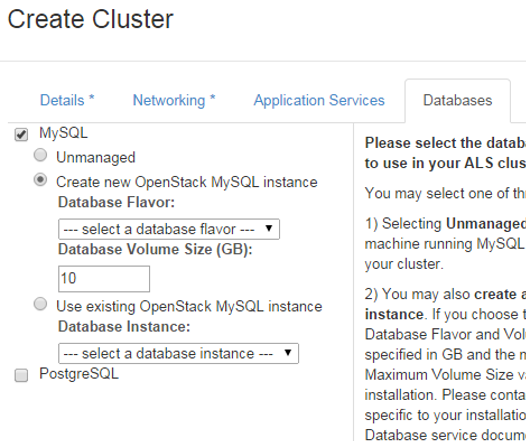

If a more durable or scalable MySQL database service is needed, ensure your ALS cluster is configured to use a database instance or master/slave pair provided by the Database Service. This is an option at cluster create time.
ALS cluster create wizard

Alternatively, if the Database Service was not integrated with the cluster at the time of cluster creation, the administrator of the ALS cluster can switch from the unmanaged MySQL service to the managed Database Service using the following kato commands:
kato config set mysql_node mysql/host 10.5.120.101 kato config set mysql_node mysql/port 3306 kato config set mysql_node mysql/user root kato config set mysql_node mysql/pass CorrectHorseBatteryStaple
kato config set mysql_node connection_wait_timeout 100 kato config set mysql_node keep_alive_interval 60
Application deployment does not change between the managed and unmanaged versions of the MySQL service. A developer connects to and interacts with the MySQL database in exactly the same way regardless of which service is used.
The benefits of the unmanaged service include a lighter footprint (fewer virtual machines) and no dependency on the Database Service being configured and available. The managed service provides full lifecycle management and scalability; capabilities not found in the unmanaged service.